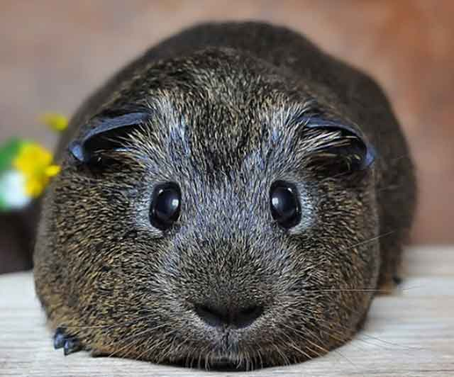

기니피그 목욕이 필요해! 씻기는 방법
웬만한 반려동물은 목욕을 해야 합니다. 목욕은 스스로 하기도 하지만, 가정에서 키우는 반려동물은 대게 주인이 씻겨줘야 할 수도 있습니다. 기니피그도 마찬가지로 목욕이 필요할 때가 있는 데요. 기니피그가 무슨 질병이 생긴 건 아닌가 싶어 병원을 데려가면 뜻밖에 목욕이 필요할 때가 있습니다. 기니피그 목욕에 대한 모든 것! 목욕이 필요한 기니피그를 위해 씻기는 방법을 알려드릴게요!
"물을 싫어하는 기니피그, 안정이 먼저"
기니피그는 물을 좋아하지 않습니다. 그래서 갑작스럽게 물이 닿는다면 매우 놀랄 수도 있는 데요. 그래서 목욕을 시켜야 한다면 될 수 있으면 머리를 쓰다듬고 안정을 취할 수 있도록 도와주고 욕조로 천천히 데려가는 것이 좋습니다.
만약 물을 극도로 무서워하거나 싫어한다면 목욕용 파우더를 사용하는 것도 하나의 방법이 됩니다. 파우더를 문질러주고 빗질을 하며 파우더를 털어낼 수 있습니다.
"물티슈로 깨끗하게 닦는 것도 대안!"
무조건 물로 씻겨야 한다는 생각은 No! 가볍게 샴푸를 묻힌다면 물티슈로 닦아내는 방법도 있습니다. 전체적으로 냄새가 나거나 더럽지 않다면, 더러운 부위만 골라 부분적으로 닦아주는 것도 하나의 방법이 됩니다.
"욕조는 적당한 것으로, 물은 조금만!"
싱크대, 일반 욕조, 바가지 등 다양한 곳에서 목욕을 시킬 수 있습니다. 다만, 기니피그가 쉽게 미끄러지지 않도록 바닥에 고무가 있는 것이 좋습니다.
쉽게 미끄러지지 않는 소재의 욕조에 기니피그가 살짝 잠길 수 있도록 물을 받아줍니다. 물은 뜨겁지 않고 미지근한 온도로 준비해 주시는 것이 좋습니다.
"욕조에 적응할 시간은 충분히, 샴푸로 살살"
기니피그를 욕조에 내려뒀다면 바로 씻기기보다는 어느 정도 적응할 시간을 주는 것이 좋습니다. 그리고 샴푸를 소량 발라 거품을 내고 구석구석 닦아 줍니다. 귀, 눈, 코에는 들어가지 않도록 주의하고 물로 깨끗이 씻어줍니다.
샴푸가 남아있으면 피부에 큰 자극이 될 수 있으므로 될 수 있으면 미지근한 물로 여러 번 뿌려 샴푸를 깨끗하게 씻어 냅니다.

"마른 수건으로 감싸고 빗질하기"
큰 수건으로 기니피그 몸 전체를 감싸고 물기를 흡수한 다음에 천천히 빗질하며 엉킨 털을 풀어줍니다. 만약 수건이 다 젖을 정도로 물이 흡수됐다면 새 수건으로 교체합니다. 물기를 말리는 과정에서 기니피그가 몸을 떨 수 있는 데요. 자연스러운 현상이니 걱정하지 않으셔도 됩니다.
기니피그 감기가 걱정된다면 헤어드라이어로 완전히 말리는 방법도 있는 데요. 약한 바람, 낮은 온도 그리고 될 수 있으면 가장 멀리서 털을 말려주세요.
마지막으로는 목욕하는 동안 스트레스받았을 기니피그를 위해 간식을 주고 기분을 좋게 할 수 있습니다. 깨끗한 물과 사육장 안을 청소해준다면 목욕으로 받았던 스트레스도 금세 사라질 것입니다.
[출처] 기니피그 목욕이 필요해! 씻기는 방법 ｜ 작성자 코코네집